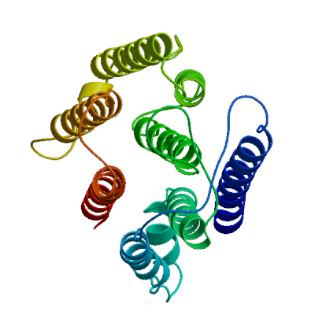

|
|

|
SWISS-MODEL Homology Modelling Report |
Model Building Report
This document lists the results for the homology modelling project "Kv-RRB__R2" submitted to SWISS-MODEL workspace on July 28, 2021, 4:52 p.m..The submitted primary amino acid sequence is given in Table T1.
If you use any results in your research, please cite the relevant publications:
- Waterhouse, A., Bertoni, M., Bienert, S., Studer, G., Tauriello, G., Gumienny, R.,
Heer, F.T., de Beer, T.A.P., Rempfer, C., Bordoli, L., Lepore, R., Schwede, T.
SWISS-MODEL: homology modelling of protein structures and complexes.
Nucleic Acids Res. 46(W1), W296-W303 (2018).


- Bienert, S., Waterhouse, A., de Beer, T.A.P., Tauriello, G., Studer,
G., Bordoli, L., Schwede, T. The SWISS-MODEL Repository - new features and
functionality. Nucleic Acids Res. 45, D313-D319 (2017).
- Studer, G., Tauriello, G., Bienert, S.,
Biasini, M., Johner, N., Schwede, T. ProMod3 - A versatile homology
modelling toolbox. PLOS Comp. Biol. 17(1), e1008667 (2021).
- Studer, G., Rempfer, C., Waterhouse, A.M.,
Gumienny, G., Haas, J., Schwede, T. QMEANDisCo - distance constraints
applied on model quality estimation. Bioinformatics 36, 1765-1771 (2020).
- Bertoni, M., Kiefer, F., Biasini, M., Bordoli, L.,
Schwede, T. Modeling protein quaternary structure of homo- and
hetero-oligomers beyond binary interactions by homology. Scientific
Reports 7 (2017).
Results
The user uploaded a template structure to use for the modelling process.
Models
The following model was built (see Materials and Methods "Model Building"):
Model #01 |
File | Built with | Oligo-State | Ligands | GMQE | QMEANDisCo Global |
|---|---|---|---|---|---|---|
|  | PDB | ProMod3 3.2.0 | monomer |
None
|
0.48 | 0.45 ± 0.05 |
|
|
| Template | Seq Identity | Oligo-state | QSQE | Found by | Method | Resolution | Seq Similarity | Range | Coverage | Description |
|---|---|---|---|---|---|---|---|---|---|---|
| template_upload.1.A | 52.75 | monomer | 0.00 | HHblits | Unknown | - | 0.47 | 6 - 283 | 0.96 | Polypeptide |
The template contained no ligands.
Target FEDIRAIYKGEVFKCVVLCVAYGVALLHIYIYPELFNVEIAAPEDIPDNELHNFH
template_upload.1.A -----QVARDEGRRCLLMCVAFAIAIAHLYIYPALFGVRIVDQAEVPAEERTYFH
Target HGWTSMAVVFLIEALTVSLKVICTWHEPQ-AAQILAQKLEGNIGALFAEYFIVGM
template_upload.1.A HGWTAMLVIFFIEGVTVFLK-VCSTRKTRWLEKAVLQKLDGNIGVLIGEYIVVAA
Target TYIIMGYNMMPVFIEARTGRRVYVVRYMAWLVDACGLISLDCHCLFDRSFAEARI
template_upload.1.A TYIIMGANLIPVFER--SGRRVYAVRYMEWTIDACGLVYLDCRILFGMPFSKFRM
Target TFVWAVAYILFGLWSAVSSSWLWHWIFLSCAWLTFGLTCLKLLHFLWIDPYPRE-
template_upload.1.A LLVYSVLYMLFGLWAALASTWMWYAIFLSASWFFFGLVCYYYWTFHRQN--PSPL
Target -PFNNALVKPAILTFIIVWWVLYGILFMVAFQAPEIMPQHVEQLLWTVMDVIMKL
template_upload.1.A QQFGRAPIKQAILVFVIVWWVLYGVLFMLCFQAPDVVPQWLEQLLWTGMDVVMKL
Target SHTVILIAWRE
template_upload.1.A SHTVVLMAWRE
Materials and Methods
User Template Alignment
The user entered their own target sequence together with an uploaded a template structure file in PDB format.Model Building
Models are built based on the target-template alignment using ProMod3 (Studer et al.). Coordinates which are conserved between the target and the template are copied from the template to the model. Insertions and deletions are remodelled using a fragment library. Side chains are then rebuilt. Finally, the geometry of the resulting model is regularized by using a force field.
Model Quality Estimation
The global and per-residue model quality has been assessed using the QMEAN scoring function (Studer et al.).
Ligand Modelling
Ligands present in the template structure are transferred by homology to the model when the following criteria are met: (a) The ligands are annotated as biologically relevant in the template library, (b) the ligand is in contact with the model, (c) the ligand is not clashing with the protein, (d) the residues in contact with the ligand are conserved between the target and the template. If any of these four criteria is not satisfied, a certain ligand will not be included in the model. The model summary includes information on why and which ligand has not been included.
Oligomeric State Conservation
The quaternary structure annotation of the template is used to model the target sequence in its oligomeric form. The method (Bertoni et al.) is based on a supervised machine learning algorithm, Support Vector Machines (SVM), which combines interface conservation, structural clustering, and other template features to provide a quaternary structure quality estimate (QSQE). The QSQE score is a number between 0 and 1, reflecting the expected accuracy of the interchain contacts for a model built based a given alignment and template. Higher numbers indicate higher reliability. This complements the GMQE score which estimates the accuracy of the tertiary structure of the resulting model.
References
- BLAST
Camacho, C., Coulouris, G., Avagyan, V., Ma, N., Papadopoulos, J., Bealer, K., Madden, T.L. BLAST+: architecture and applications. BMC Bioinformatics 10, 421-430 (2009).

- HHblits
Steinegger, M., Meier, M., Mirdita, M., Vöhringer, H., Haunsberger, S. J., Söding, J. HH-suite3 for fast remote homology detection and deep protein annotation. BMC Bioinformatics 20, 473 (2019).
Table T1:
Primary amino acid sequence for which templates were searched and models were built.
FAEYFIVGMTYIIMGYNMMPVFIEARTGRRVYVVRYMAWLVDACGLISLDCHCLFDRSFAEARITFVWAVAYILFGLWSAVSSSWLWHWIFLSCAWLTFG
LTCLKLLHFLWIDPYPREPFNNALVKPAILTFIIVWWVLYGILFMVAFQAPEIMPQHVEQLLWTVMDVIMKLSHTVILIAWRE
Table T2:
| Template | Seq Identity | Oligo-state | QSQE | Found by | Method | Resolution | Seq Similarity | Coverage | Description |
|---|---|---|---|---|---|---|---|---|---|
| template_upload.1.A | 52.75 | monomer | - | HHblits | Unknown | NA | 0.47 | 0.96 | Polypeptide |
| template_upload.1.A | 53.85 | monomer | - | BLAST | Unknown | NA | 0.47 | 0.96 | Polypeptide |
The table above shows the top 2 filtered templates. A further 1 template was found which was considered to be less suitable for modelling than the filtered list.
template_upload.1.A